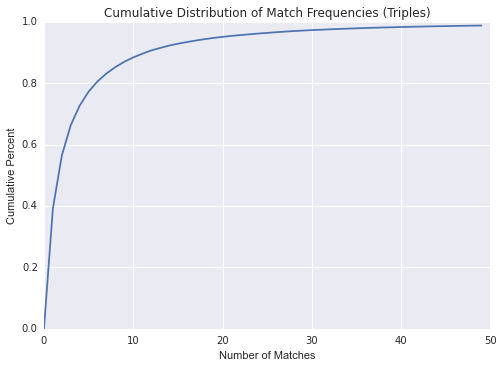

The Video
Background and Motivation
What is League of Legends?
From Wikipedia:
League of Legends (LoL) is a multiplayer online battle arena video game developed and published by Riot Games. As of January 2014, over 67 million people play League of Legends per month, 27 million per day, and over 7.5 million concurrently during peak hours. League of Legends has spawned a large, active competitive scene. In North America and Europe, Riot Games organizes the League of Legends Championship Series, which consists of 8 professional teams in each continent.
Gameplay
There are two teams, with five players on each team. Each player controls a unique champion that has its own unique abilities. Each team has a base, one at the bottom left corner of the map and one at the top right corner of the map. There are three lanes that minions from each team pass through, labeled Top, Middle, and Bottom. In between these three lanes is the jungle where there exists neutral monsters. Throughout the lanes and the bases, there are friendly and hostile turrets and inhibitors in the bases. The objective of the game is to destroy the enemy nexus in their base, which is protected by these buildings.
In addition to normal games, Riot provdes a tier system in which players can play ranked games. The skill tiers are Bronze, Silver, Gold, Platinum, Diamond, Master, and Challenger. In the higher tiers, the norm is to have a team composition that consists of the following
- Top Laner
- Jungler
- Mid Laner
- Attack Damage Carry
- Support
Motivation
Given the structured set up of League Games, a pattern emerges especially in the higher levels of play and during ranked games where players try their best and care about game outcomes. This results in a "game meta", where teams have one of each kind of role listed above selected from a much smaller pool of high-level competitive champions. Professional game commentators usually emphasize champion matchups and synergies when talking about the results of each game, and a single unconventional champion pick can cause an uproar of excitement in the stadium because they are so rare.
Because league professional competitions have been increasingly heavily covered in the press, and involve millions of dollars of sponsorships, revenue, and prize money, we wanted to figure out how much a simple champion selection can actually affect the outcome of a game. How much of a professional League of Legends game win is the result of superior skill, and how much of it is decided by each team's luck and knowledge of which champions to pick at the beginning? This is what we set out to find out.
Problem and Data Collection
Objectives
With the gameplay in mind, we wanted to explore the following:
- Explore the challenger tier dataset and find interesting results.
- Try to predict outcomes of games by training on data and testing on other data.
- Try to predict team gold differential based on team compositions.
Data Collection
To perform the analysis, we needed to get data first. What we wanted was all the data from high level matches. Unforunately, Riot's API is more suited for looking up a specific player's data, and not all the matches in a specific tier.
Luckily, there was still a way to get the data that we wanted. We were able to retrieve a list of players in the challenger tier (there are 200 of them), and for each player in the challenger tier, we retrieved a list of match IDs. We combined all the lists into a set and removed duplicates and filtered out only the relevant matches. Since the game will have changes every year, we decided to focus only on the 2014 season. The last problem was that we were rate limited by the API to 10 requests every 10 seconds. Thus, in order to retrieve the data, we had different computers run the retrieval on different portions of the dataset, and then we stored the data into a file so that we did not have to poll Riot's API again.
Below is am example of the dataframe that contains each player in the challenger tier.

After retrieving the data, we found that some of the matches were inconsistent with our assumptions. A few of the matches contained multiple junglers on a single team, and a few of the matches contained no mid laners. We filtered out these matches because in actual professional play, these unorthodox compositions never happen.
Below is an example of the dataframe that contains each match.
Data Analysis
Team Synergies
Teamwork is essential to succeeding in a game of League, and often certain champions' abilities complement each other extremely well. We decided to statistically analyze how team compositions effect a team's chances against an opponent. Can we successfully predict game outcomes simply by supplying an algorithm trained on historical synergies with two team compositions?
After gathering data on team compositions and match results from the Riot API, we constructed a lookup table of champion pairs and their historical game win percentage together. To visualize our data distribution, we constructed the graph above. With enough data, we were able to see the curve flatten: meaning most of our champions pairs had a significant amount of win-loss history.

We also attempted to calculate a similar lookup table for champion triples, but unfortunately found that there is actually only a very small percentage of triples data that has a sufficient sample size for the triples data to have true predictive power. For the triple data, only 10% of the data has a sample size larger than 10. As a result, we did a lot of analysis that ended up adding more noise than information, and decided to focus our synergy analysis on champion pairs rather than triples or a higher number of combinations.
With this lookup table, we were able to train a random forest classifier with the probabilities supplied by each combination of champions on any team on our training set. We set a binary variable to represent a win or loss, and took inspriation from the Wine Classification problem set to train the random forest model to predict the win or loss based on champion pairs that existed within each team. After training our classifier, we tested it on a separate testing data set in the same format - giving 10 champions as input (split into two teams) and receiving a win/loss prediction as output. Our results are as follows:
Percent of results with better than 50% accuracy: 93.0
Percent of p-values significant at 10% level: 47.0
We found that 93% of the time, our results are better than randomly guessing (a 50% chance of a correct prediction). Based on this predictive power, we could be making money if we started betting on games! However, the next step was to move our predictions to Esports games, the professional competitive matches that generate millions in revenue and capture worldwide attention, where the players are treated as celebrities especially in countries like China and Korea. Unfortunately our algorithm did not prove very effective in predicting the results of Esports championship games, as shown in our visualizations below:
Percent of results with better than 50% accuracy: 93.0
Percent of p-values significant at 10% level: 47.0
Based on these results, we can see that our statistical predictors don't have much external validation with the esports data set and performs extremely poorly. This makes sense because professional esports games are by nature very different than the ranked games that we were examining, as the teams are very familiar with each other, can communicate extremely effectively, and have practiced various strategies together during training. The nature of the games that result may depend less on champion select and more on teamwork and cooperation than the solo-queue games in challenger tier, which is what we trained our data set on.
After this, we worked on a model to predict gold difference using the same Random Forest approach.
Gold earned in a game by each team is an extremely strong indicator of game dominance and can very accurately predict the game outcome. We put together this visualization to make sure that, in the cases when gold dominance doesn't match win outcome, there is not a skew.
We bucketed gold differences into less than -10000 (almost definite loss), -10000-0 (likely loss), 0-10000 (likely win), and 10000+ (almost definite win). We were able to predict these with ~30% accuracy benchmarked against a baseline of 25% from guessing, though this benchmark may not be entirely accurate due to the distribution of gold differentials. When incorporating gold differentials and the likelihood of an unexpected result, our model did not seem to improve.
 Percent of results with better than 25% accuracy: 99.0
Percent of results with better than 25% accuracy: 99.0
Seeing that we have 4 buckets, here we can see that our gold difference results do relatively well. However we have not yet adjusted this for the fact that there are different sample sizes in each of the 4 buckets which may make 25% not the ideal benchmark for our results.
Lane Matchups
After considering team synergies, we decided that simply considering champion team synergies did not encompass all of the effects of champion select. Because some champions are built to counter other champions, or have a marginally larger attack range that can cause one champion to outlane another. Therefore we decided it would be important to examine whether certain champions win with a much higher likelihood against certain lane opponents, and attempt to predict games with those probabilities.
We first split the match data we have into a testing set and training set, and accumulate a match history dictionary of wins and losses between different pairings of champions that are matched up in each lane. These win-loss histories are calculated into probabilities and then training a random forest classifier on these probabilities to predict the wins and losses of games in a testing set.
Often times, certain champions can prove to be effective counters against another champion in lane, and the differences between champions of opposing sides in the same lane can be significant enough to severely affect the early game and may snowball into the late game and affect game outcomes. For instance, if some champions have a much larger range than other champions, they may be able to effectively poke and harrass the other champion out of lane. Other champions (for instance, Veigar) have skills and stats built to scale on his enemy's Ability Power damage, and can be extremely effective against champions who rely on AP to make their own skills effective. These differences are introduced when champions are selected, and even though they may affect game outcome, have nothing to do with the actual skill of the players - so we are interested in measuring these inherent differences.
Classifier score by number of trees used in random forest
We analyzed matchup data with a similar approach as we took for synergy data - creating a lookup table with match histories of different pairings of champions when they were laning against each other. With these percentages, we trained a random forest classifier and tested the resulting model on data that was set aside for testing. However, our prediction results weren't great, as we only got around 52.1% predictive accuracy on the test set.
Interesting Statistics
We slightly expanded the scope of our project by taking a look of some in-game events. There are some interesting things we can calculate from the data supplied by the Riot API. For example, we can calculate the probability of winning a game given that one of your lanes gets the first blood, or based on game structures destroyed such as turrets and inhibitors.
Information that we re-queried the Riot API for
Lastly, we want to understand whether a team with a single very strong player (these strong players are called fed players) can perform better than teams where the champions share the kills or are more evenly matched in skill level. Since we are interested in the impact of skill level on game outcomes, this is an interesting branch of skill impact to explore. In terms of the data, if the standard deviation of the kills on the team is larger, there is a high chance that there is a fed player on the team, whereas if the standard deviation of the kills on the team is smaller, the champions are balanced and tend to have a similar number of kills.
Results of our analysis
In conclusion, we see that although we can provide some insight on how games are expected to turn out from champion selection (pre-game events), knowledge of game events, even early ones, have significantly increased predictive power. This suggests that skill plays a major component in League of Legends at a near-professional level.